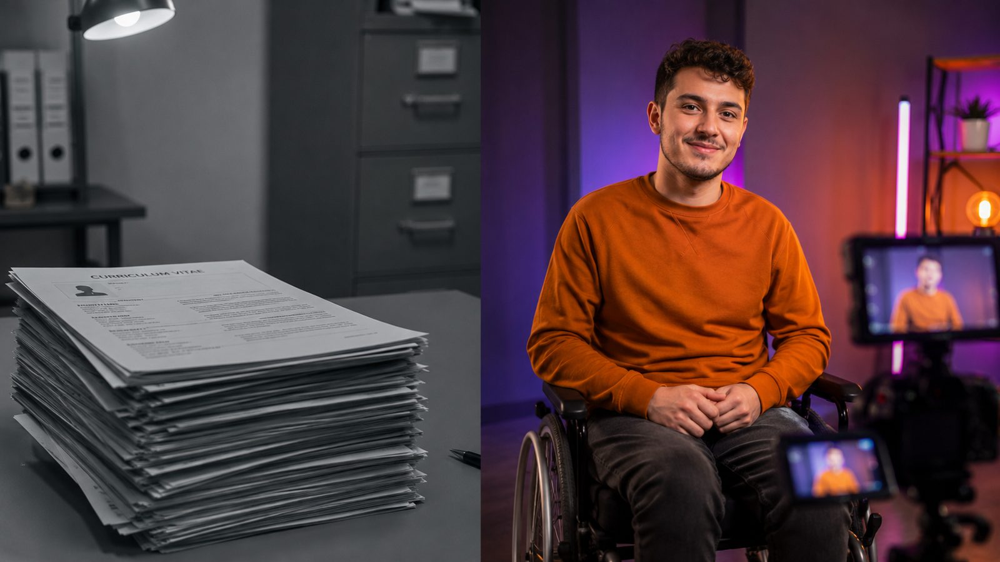
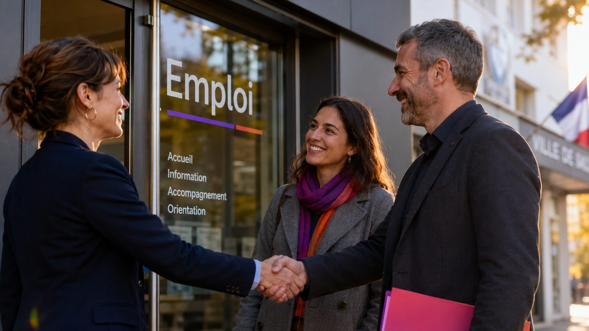

Un partenariat concret entre la Ville, Oullins-Pierre-Bénite Emploi et Rayoneo pour connecter les habitants éloignés de l'emploi au tissu d'entreprises locales — sans coût de fonctionnement pour la commune.
Le taux de chômage des personnes en situation de handicap reste près du double de la moyenne nationale
Obligation d'emploi (OETH) pour tout employeur de 20 salariés et plus — y compris la commune elle-même
habitants : 8ᵉ commune de la Métropole de Lyon, avec ses demandeurs d'emploi… et ses employeurs
C'est le temps accordé à un CV papier. Il filtre les parcours atypiques, il ne révèle pas les compétences
Le savoir-être, la motivation, la résilience, la capacité d'adaptation. Exactement ce que les employeurs disent chercher en premier — et exactement ce que les publics éloignés de l'emploi ne peuvent pas prouver sur une page A4.

SAS à mission de l'Économie Sociale et Solidaire, installée 15 rue Tupin. Notre métier : révéler les compétences des personnes en situation de handicap et des publics éloignés de l'emploi, par la vidéo et la réalité virtuelle, et les connecter aux bons employeurs.
Portraits professionnels tournés en studio : le candidat montre qui il est, pas seulement ce qu'il a fait. Parcours candidat intégralement financé par les dispositifs publics.
Audit sur site en 62 points (accessibilité, exigences, environnement) avec préconisations chiffrées et financements fléchés Agefiph / FIPHFP. Outil numérique propriétaire.
Plateforme qui croise le profil d'exigences réel du poste avec les capacités des candidats — au-delà des mots-clés d'un CV.
Immersions en réalité virtuelle pour faire vivre les situations de handicap aux équipes et lever les a priori avant l'intégration.
Alix — ambassadrice Rayoneo
CV vidéo — Hélène Frantellizzi
Le chaînon manquant : entre l'accompagnement social et l'embauche effective, il faut révéler le candidat (CV vidéo, coaching), objectiver le poste (analyse sur site) et rassurer l'employeur (sensibilisation, suivi post-recrutement). C'est exactement le métier de Rayoneo — et de personne d'autre sur le territoire.
OPBE, France Travail, Cap emploi et la Mission Locale identifient les candidats motivés parmi les habitants — notamment PSH et publics des quartiers Politique de la Ville.
CV vidéo studio, coaching, préparation aux entretiens. Zéro coût pour la Ville : le parcours candidat est financé par les dispositifs publics existants.
La Ville et OPBE ouvrent leur réseau d'employeurs ; Rayoneo apporte analyse de poste, matching, sensibilisation des équipes et suivi jusqu'au 6ᵉ mois.
Chaque embauche réussie devient un CV vidéo témoignage, un employeur ambassadeur et un habitant qui rayonne — matière première des forums OPBE et de la communication municipale.
Rayoneo en action — forum Find a Job 2026
« On ne demande pas à la Ville de financer. On lui demande d'ouvrir des portes qu'elle seule peut ouvrir. »
habitants accompagnés (CV vidéo + coaching), orientés par OPBE et ses partenaires
entreprises locales engagées, avec analyse de poste offerte pour la première offre déposée
événement phare co-organisé avec OPBE pendant la SEEPH (novembre 2026)
mises en relation qualifiées visées, avec suivi post-recrutement jusqu'à 6 mois

Vous connaissez le territoire, ses habitants et ses entreprises mieux que personne. Nous savons révéler les talents. Avec OPBE comme trait d'union, tout est réuni pour faire de cette rencontre le point de départ de l'expérimentation — dès la rentrée.
Cédric Barbiero
Président — Rayoneo
15 rue Tupin, 69600 Oullins-Pierre-Bénite
rayoneo.fr
contact@rayoneo.fr
CV vidéo visibles sur le site et YouTube
CV vidéo — Lya
Rayoneo est née à Oullins-Pierre-Bénite. C'est ici qu'elle veut faire ses preuves — avec vous.
📄 Télécharger la synthèse du projet (PDF · 4 pages)